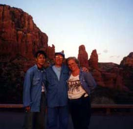

セドナ日記 〜 第１日目 98.5.4
教会から見る夕日
セドナには沢山のキリスト教の教会があるが、最も有名なのは、きっと「The Chapel Of The Holy Cross」だと思う。
ダウンタウンからは89Aを西に少しいった所にある、セドナ交通の要所- Y - を左折し179号線を南下する。 緩やかなカーブを幾つかすごすし、「Chapel Rd」に左折して入る。坂を登ると、そこにその教会はある。 赤い岩山に上に、作られたコンクリート造りの、礼拝堂、第一印象は、コンクリートの人工的な匂が、岩山の自然とのバランスを崩しているような気がしたのだが、そんな気分は２分もすればなくなり、その場所にこのような教会があることの必然性に圧倒され、バランスを崩すどころか、完全な調和が感じられた。 その日の日没の時刻には、礼拝堂はしまっていて入れないのだが、礼拝堂の入り口、すなわち眺めがいいところ、までは入れる。
夕日が沈む方向と反対側には、Bell Rock と Courthouse Butte の２つの岩山が、夕日を浴びている姿が見える。
 教会のすぐ側の岩肌も、もちろん赤くて、浸食によって、複雑な模様が形成されているのだが、じっと見ていると、人の顔や、姿形に見えてきた。フラクタルの数式模様のように、大きな顔のなかに、また幾つかの顔があり、そのなかにもまた...という感じである。 そんな、大きな岩肌からは切り離された、独立した岩柱が列になっているところもあり、僕はその中の一つが「マリア様が子供を抱いている姿」に見えた。（僕は、キリスト教の信者ではないのですが...といって、なにか特定の宗教、団体には属しているわけでもありません。念のため）実は、あとでわかったのだが、この岩には既にマリア様の名前が着けられていた。だれでも考えることは同じようです。その日、この教会に夕日を見に来ていたのは、僕ら２人と、老夫婦の二組だった。 こんな、贅沢な夕日を、これだけの人数で見ていいのか！という感じだった。 彼らは、ミシガン州に家があるが、すでにリタイヤしており、寒い時期はフェニックス（アリゾナの州都、冬は暖かい、もちろん夏は暑い）にトレーラーでやって来て、生活してる。渡り鳥みたいだけど、快適な過ごし方だと思う。歳はよくわからないが、60〜70歳かな。
彼は言う「若いときはすごくがんばった。がんばってがんばって、お金を貯めて、今は悠々自適な生活さ、いいだろう」と。確かに、いい。若いときにがんばってお金貯めたのはいいけど、リタイヤしてからも、使い方がよくわからず、楽しいこともよくわからず、という寂しい生き方よりはいい。
でも、僕は思った。
「若いときから、楽しむって方法もあるんじゃない？」もちろん、彼には言わなかったけど.....。 その日も、彼は新聞をもっていて、やたらと経済面の事を気にしていた。「何をするにもまずお金が必要だからね」と。でも、彼らはとっても楽しそうだったし、いい人だった。
僕が、この年で、日本からはるばるセドナの地に来れたのも、彼らのような１つ上の世代ががんばってくれたおかげだしね。「これからも、充分、楽しんでください」そして、いよいよ、太陽は、遠くのなだらかな稜線に吸い込まれていった。 B＆Bのオーナー、ポーラは「セドナの夕日は、毎日変るのよ。色も、周囲の雲の形も、何から何まで全部違うの。」といっていたが、「とても素晴しい、美しい」という形容詞は、毎日使えそうな夕日が、初日から見られた。（まあ、東京からいったら、夕日とか日没の瞬間がちゃんと見れるだけで感動するかもしれない） さらに、地球が回転していることが、実感できた。
いま、日本な何時なのか？一瞬気になったが、しばらくは忘れよう日本のことは......